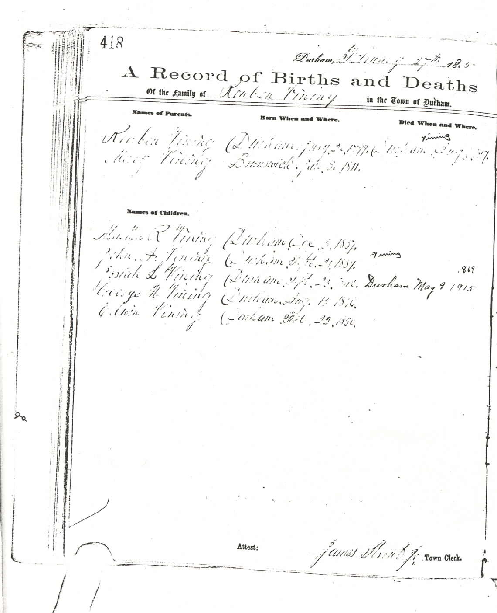
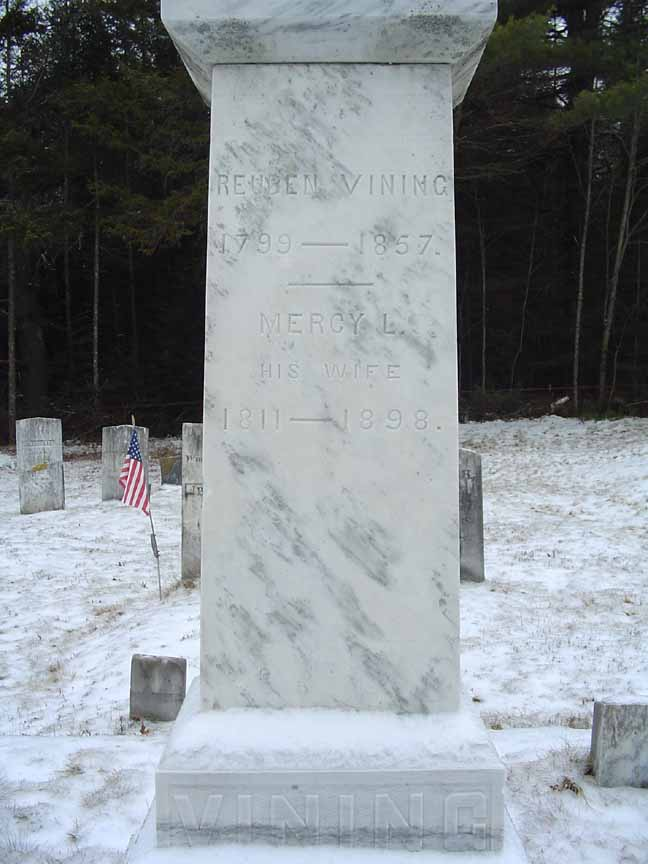
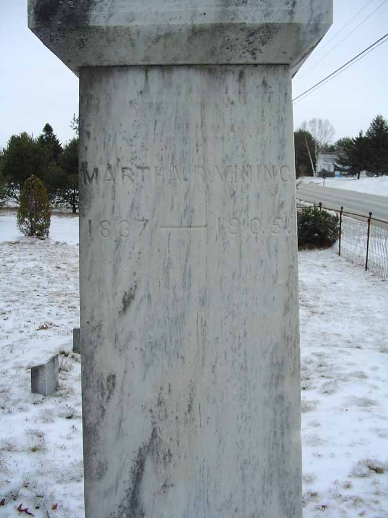
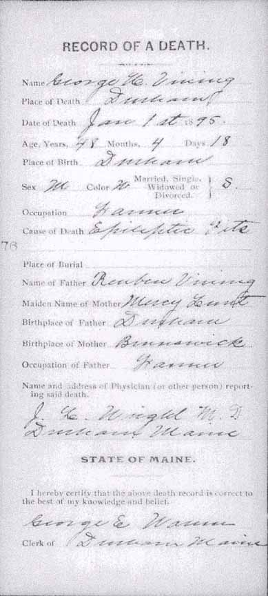
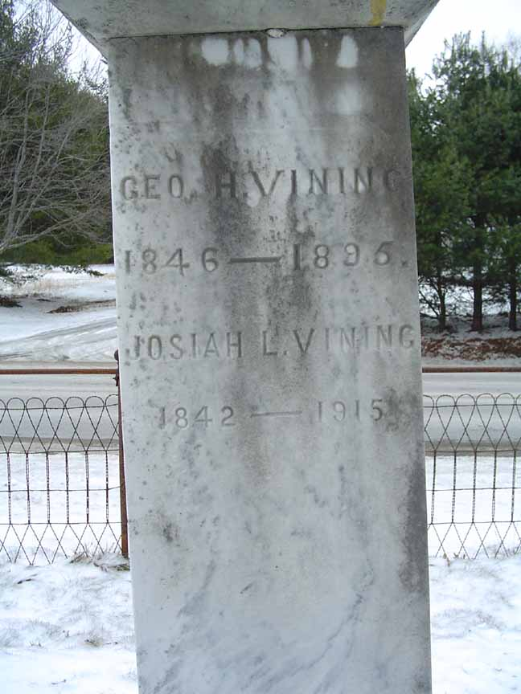

Family Data
The town of Durham, Androscoggin County, Maine, has photocopied its vital record books, and those photocopies are available for public viewing. Unfortunately, much of the photocopied material is very difficult to impossible to read. Below is the page (greatly enlarged) recording the family of Reuben Vining and Mercy Lunt. The information on this page was entered by what appears to be three individuals. The earliest (and lightest) entries were made on 27 February 1865 by James Strout Jr., the town clerk, and recorded events that occurred from a decade to more than 60 years earlier.
Census Data
| 1840 | 1850 | 1860 | 1870 | 1880 | 1890 | |
| Reuben Vining | ? | 51 | dead | |||
| Mercy (Lunt) Vining | ? | 39 | 49 | 59 | 69 | ? |
| Martha R. Vining | ? | 11 | 22 | 32 | 42 | ? |
| John A. Vining | 9 | 20 | married and living in separate household | |||
| Josiah L. Vining | 7 | 17 | 27 | living in separate household | ||
| George H. Vining | 3 | 13 | 23 | 33 | ? | |
| Edwin R. Vining | 4 m. | 10 | 20 | married and living in separate household |


Death Data
Headstone for Reuben Vining and Mercy (Lunt) Vining, in Vining Cemetery, Durham, Androscoggin County, Maine:


